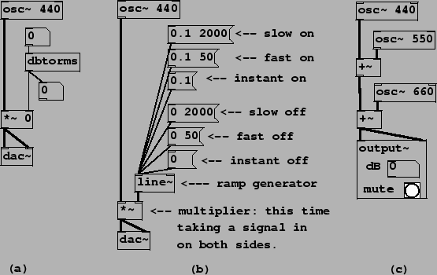
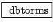
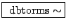

Example A02.amplitude.pd shows how to make a crude amplitude control; the active elements are shown in Figure 1.12 (part a). There is one new object class:
|  |
 : Decibels to linear
amplitude conversion. The ``RMS" is a misnomer; it should have been named
``dbtoamp",
since it really converts from decibels to any linear amplitude unit, be it
RMS, peak, or other. An input of 100 dB is normalized to an output of 1.
Values greater than 100 are fine (120 will give 10), but values less than or
equal to zero will output zero (a zero input would otherwise have output a
small positive number). This is a control object, i.e., the numbers going in
and out are messages, not signals. (A corresponding object,
, is the signal correlate. However, as a
signal object this is expensive in CPU time and most often we'll find
one way or another to avoid using it.)
The two number boxes are connected to the input and output of the dbtorms object. The input functions as a control; ``mouse" on it (click and drag upward or downward) to change the amplitude. It has been set to range from 0 to 80; this is protection for your speakers and ears, and it's wise to build such guardrails into your own patches.
The other number box shows the output of the dbtorms object. It is useless to mouse on this number box, since its outlet is connected nowhere; it is here purely to display its input. Number boxes may be useful as controls, displays, or both, although if you're using it as both there may be some extra work to do.